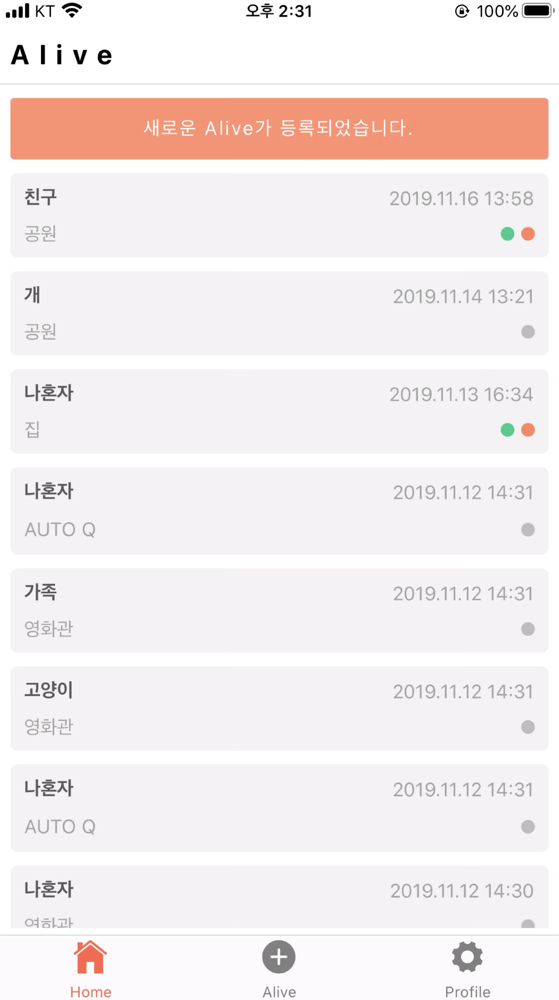
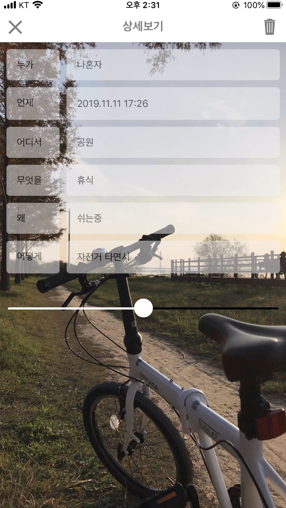
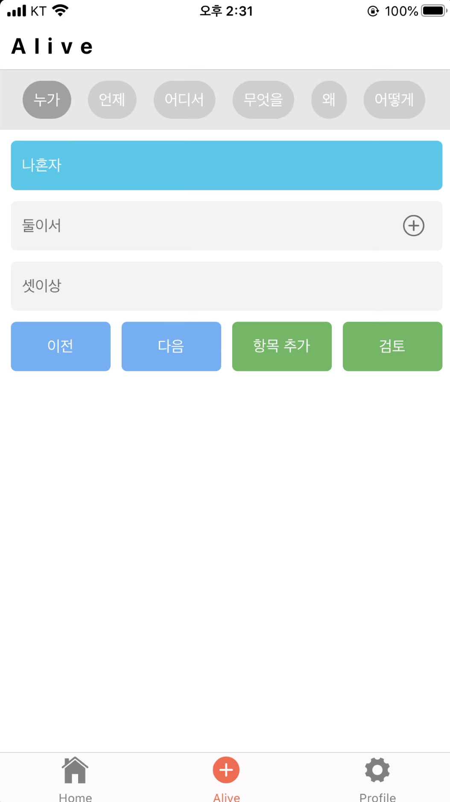
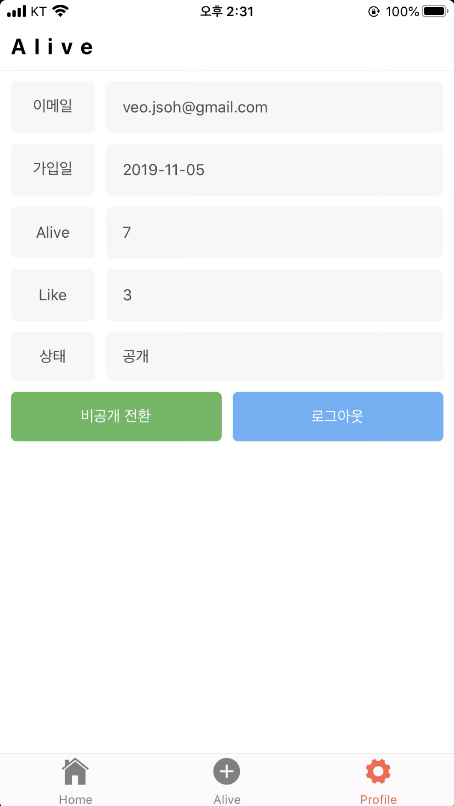

소개
- 오재성
- 1986년생 35살
- 동서대학교 시스템경영공학과 (산업공학과) 졸업
경력 (7년 1개월)
- 2020.04 ~ 2020.08 (5개월) 엠씨에스텍
- 2019.12 ~ 2020.02 (3개월) 더웰
- 2012.12 ~ 2019.04 (6년 5개월) 에스위너스
엠씨에스텍
한국남부발전 당직관리 시스템 개발
- 기간 : 2020.04 ~ 2020.08 (5개월)
- 인원 : 3명
-
담당 업무
- 업무 프로세스 및 DB 설계, 기본적인 화면 기획은 사전에 완료된 상태에서 개발 구현 작업 진행
- 인원 별 개발 파트(페이지) 할당하여 각자 프론트엔드/백엔드 진행
- 당직 일정을 관리하는 달력 컴포넌트 개발 작업
- 결재선 관리 및 결재 프로세스 수정 작업
- 레포트 연동 작업
- 개발 환경
- 프레임워크 : 한국남부발전 내부 프레임워크 (전자정부프레임워크 기반)
- 기술 : Java, JSP, HTML, CSS, jQuery, Javascript
- 데이터베이스 : Oracle (DBMS Orange)
- WAS : Apache Tomcat
- Server : Linux (Ubuntu)
더웰
모가비 음악 커뮤니티 서비스 개발 (외주)
- 기간 : 2020.12 ~ 2020.01 (3개월)
- 인원 : 2명
-
담당 업무
- 업무 회의 및 개발 진행
- DB 모델링, 개발 전반적인 프론트엔드/백엔드 담당
- 악보 편집 컴포넌트 제작
- 음원 편집 컴포넌트 작업 (오픈소스 활용)
- 커뮤니티 게시판 작업
- 관리자 페이지 작업
- 반응형 디자인 작업
- 개발 환경
- 프레임워크 : 스프링 부트 (Spring Boot)
- 기술 : Java, Thymleaf, HTML, CSS, jQuery, Javascript
- 데이터베이스 : MySQL
- WAS : 스프링 부트 내장 서버
- AWS : EC2, RDS, ROUTE 53, S3
에스위너스
KT 통합 담보 관제 서비스 (KB국민은행, KT 텔레캅)
- 기간 : 2018.08 ~ 2019.03 (8개월)
- 인원 : 5 ~ 12명
-
담당 업무
- 1차 개발 완료 후 2차 고도화 개발 시점에 투입
- 업무 회의 및 개발 담당
- KB 국민은행 연동 프로토콜 설계
- KT 텔레캅 연동 API 설계
- 관제 모니터링 및 담보 신청 개발 (올레 맵 사용)
- 개발 환경
- 프레임워크 : KT 프레임워크 (전자정부프레임워크 기반)
- 기술 : Java, JSP, HTML, CSS, jQuery, Javascript
- 데이터베이스 : PostgreSQL
- WAS : Apache + Jboss
- KT 클라우드 서비스 인프라 배포
- KT 사무실 상주 (부산)
에스위너스
자사 서비스, 컨테이너 관제 서비스
- 기간 : 2015 ~ 2019
- 인원 : 5명
-
담당 업무
- 업무 회의 및 개발 담당
- 데이터베이스 설계
- 관제 모니터링 화면 개발 (구글 맵)
- 관제 신청 화면 개발
- 개발 환경
- 프레임워크 : 스프링정부프레임워크
- 기술 : Java, JSP, HTML, CSS, jQuery, Javascript
- 데이터베이스 : MySQL
- WAS : Apache Tomcat
- AWS : EC2, RDS, ROUTE 53, S3, ELB
에스위너스
IoT 기반 수출 컨테이너 관제 서비스 (산업통산자원부, 한국무역정보통신)
- 기간 : 2016.07 ~ 2016.12 (6개월)
- 인원 : 10명
-
담당 업무
- 데이터베이스 설계
- 관제 모니터링 화면 개발 (구글 맵)
- 관제 신청 화면 개발
- IoT 장비 명령 관리 화면 개발
- 개발 환경
- 프레임워크 : 전자정부프레임워크
- 기술 : Java, JSP, HTML, CSS, jQuery, Javascript
- 데이터베이스 : Tibero
- WAS : Apache + Tomcat
- 한국무역정보통신 IDC 배포 및 운영
에스위너스
KT 컨테이너 관제 서비스
- 기간 : 2016.01 ~ 2016.05 (5개월)
- 인원 : 7명
-
담당 업무
- 업무 회의 및 개발 담당
- 데이터베이스 설계
- 관제 모니터링 화면 개발
- 관제 신청 화면 개발
- 개발 환경
- 프레임워크 : KT 프레임워크 (전자정부프레임워크 기반)
- 기술 : Java, Thymleaf, HTML, CSS, jQuery, Javascript
- 데이터베이스 : PostgreSQL
- WAS : Apache + Jboss
- KT 클라우드 서비스 인프라 배포
- KT 사무실 상주 (서울)
개인 프로젝트
INTO THE VAN, 캠핑카 중개 및 커뮤니티 서비스
- 기간 : 2020.09 ~ 2020.10 (2개월)
- 인원 : 1명
-
담당 업무
- 기획, 설계, 디자인, 개발, 운영 담당
- 캠핑카 비교분석 서비스
- 네이버 로그인, 카카오 로그인 연동
- 개발 환경
- 프레임워크 : 스프링 부트 (Spring Boot)
- 언어 : Java
- 기술 : HTML, CSS, jQuery, Javascript, Thymleaf
- 데이터베이스 : MariaDB
- WAS : 스프링 부트 내장 서버
- AWS : EC2, ROUTE 53, S3 / 데이터 베이스 (NAS)
Alive, 미니멀 SNS 브이로그 서비스
- 기간 : 2019.08 ~ 2019.10 (3개월)
- 인원 : 1명
-
담당 업무
- 기획, 설계, 디자인, 개발, 운영 담당
- 하이브리드 모바일(iOS, Android) 개발부터 스토어 배포까지 전체 사이클 진행
- 개발 환경
- 모바일 : React Native
- 웹 (프론트/백엔드) : Spring Boot
- 기술 : SCSS, ES6, Router, REDUX
- 데이터베이스 : MariaDB
- WAS : 스프링 부트 내장 서버
- AWS : EC2, ROUTE 53, S3 / 데이터 베이스 (NAS)
- 기타
- 현재 모바일은 비활성화되어 접속은 되지 않으나, '지금이순간' 키워드로 검색하면 앱 스토어에서 확인 가능



